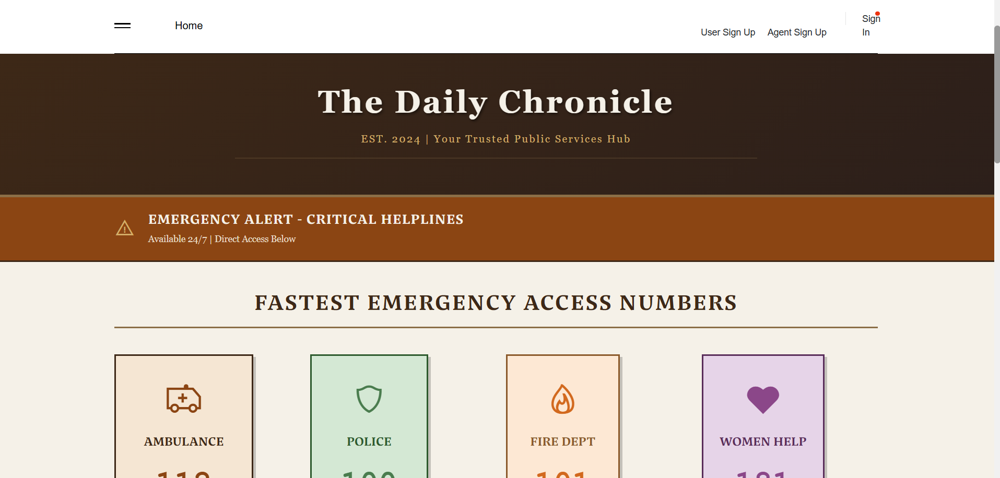
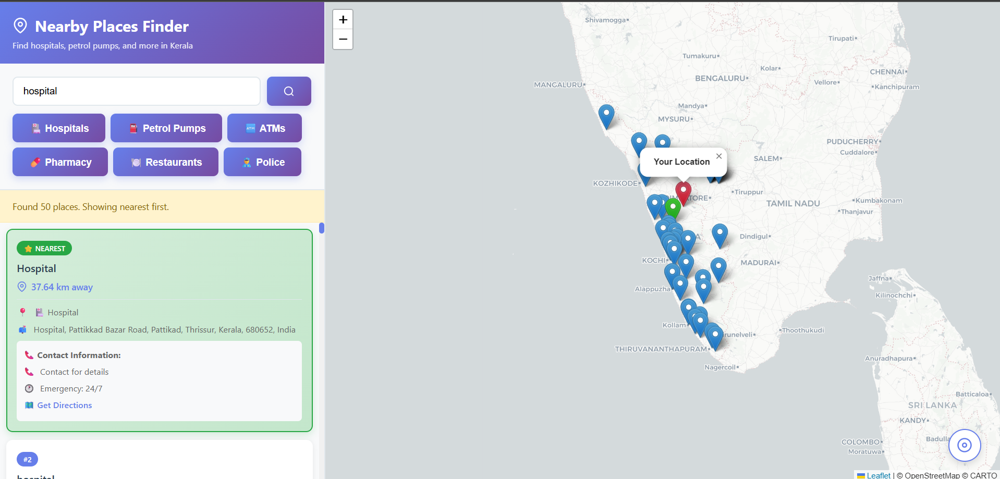
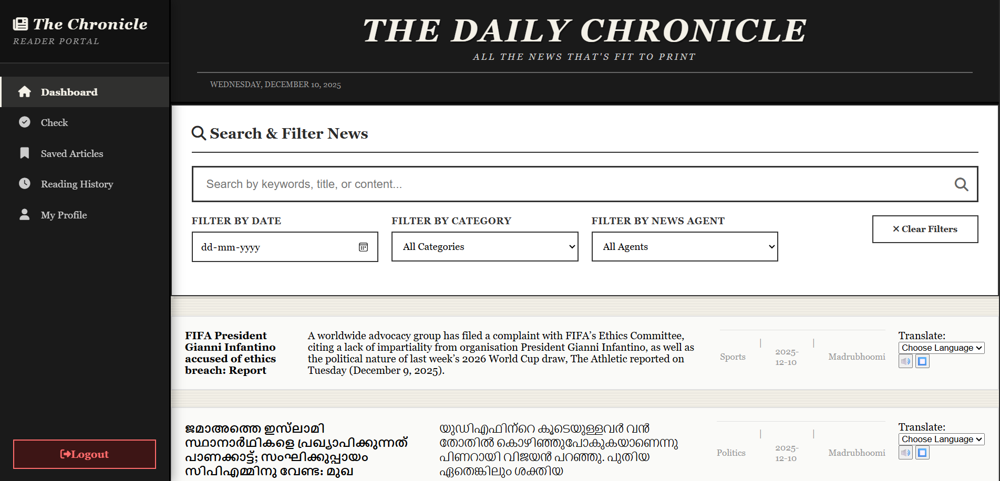
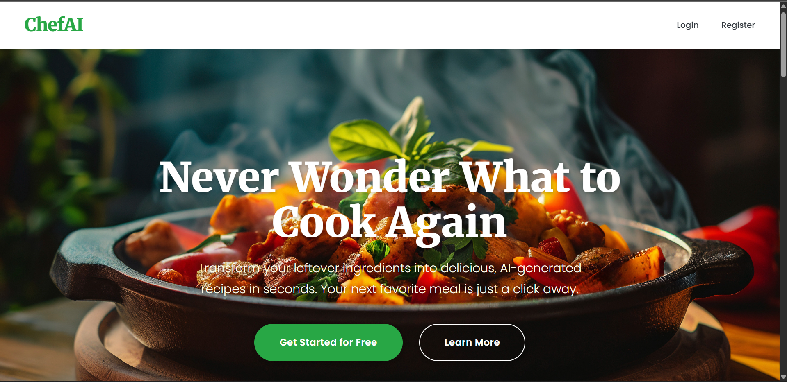
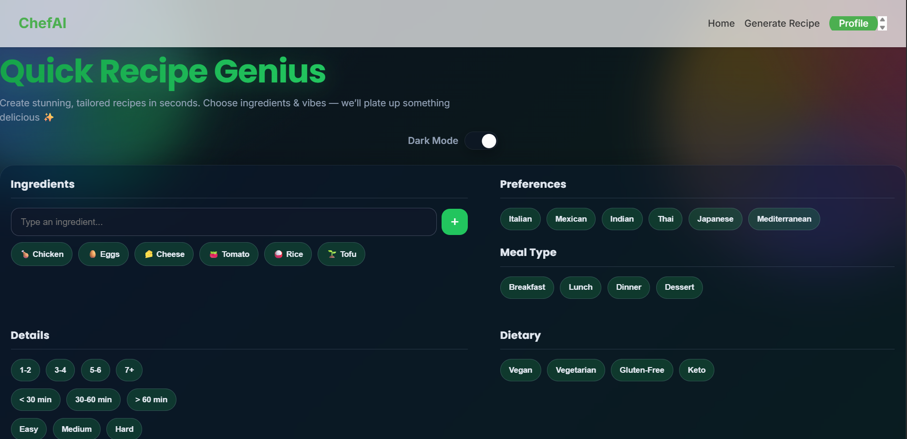
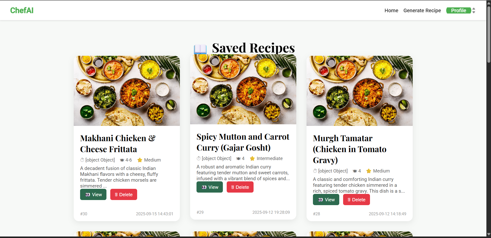
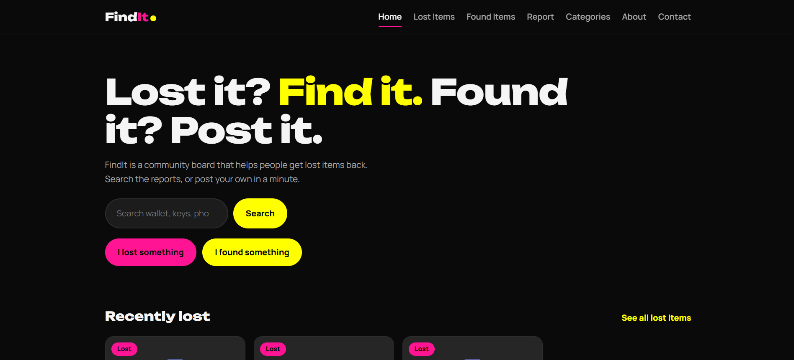
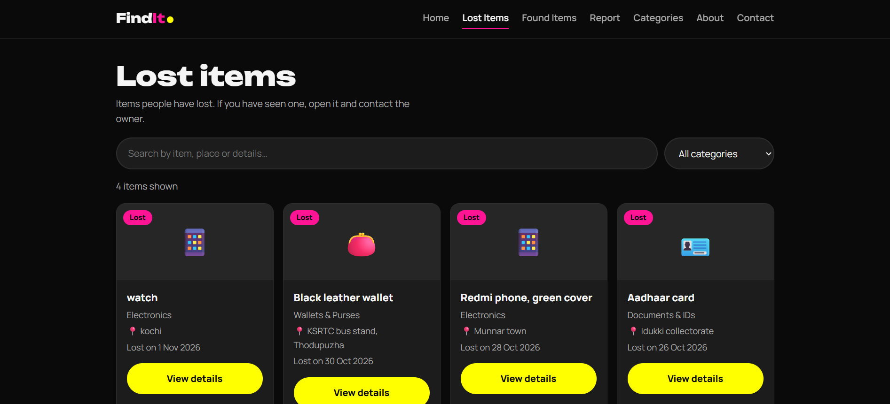
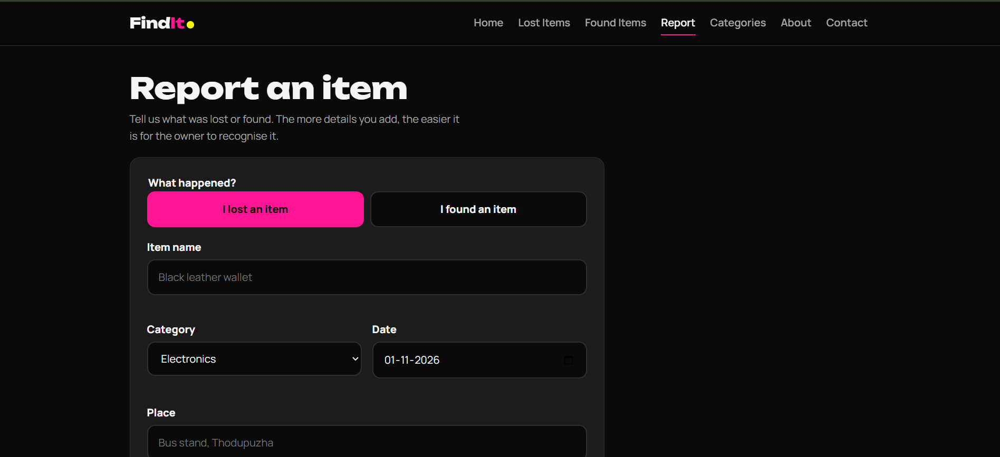

My Projects.
Here are some projects I have developed using programming languages and web technologies.
Hyper-Local Public Service and Health Connector
A web application designed to help users access local public services, health information, welfare schemes, local announcements and nearby service centres.



Technologies Used
Chef-AI Recipe Generator
A recipe-generation web application that helps users discover recipes based on available ingredients, cuisine, dietary preferences, meal type and cooking time. Users can also save their favourite recipes.



Technologies Used
FindIt – Lost & Found Web App
A responsive web application where people can post lost or found items with a photo, search and filter by category, view item details and mark items as returned. It works on phones, tablets and laptops, and saves data in the browser using LocalStorage.



Technologies Used
Interested in My Work?
Feel free to contact me to discuss my projects, skills or potential job opportunities.
Contact Me →